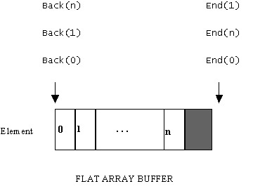
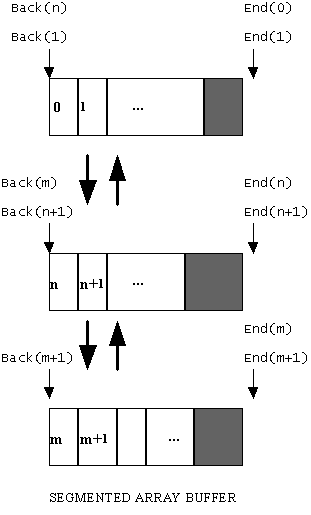

|
| |
For those arrays of same length elements which are derived from CArrayFix<class T>, the elements are contained within an array buffer which can be implemented as a flat buffer or as a segmented buffer. A flat buffer is implemented as a single contiguous region of memory while a segmented buffer is implemented as a set of separate but linked regions of memory
Given the position of an element within an array, it can be useful to fetch a pointer to the first byte following the end of the contiguous region of memory containing that element (the end pointer). Similarly, it can be useful to fetch a pointer to the beginning of a contiguous region of memory (the back pointer).
An array of same length elements uses the End() function to fetch the end pointer and the Back() function to fetch the back pointer. The implementation of these two functions differs between a fixed flat array and a fixed segmented array.
|
For a flat array — i.e. an array whose buffer is implemented using a flat buffer — the end pointer simply points to the first byte following the single region of memory containing the array buffer. The back pointer simply points to the first byte of the single region of memory (as illustrated below); End() always returns a pointer to the first byte following the end of the buffer, while Back() always returns a pointer to the beginning of the buffer.

End() and Back() in fixed flat arrays
|
For a segmented array, the situation is different (as illustrated below). Looking at the segment containing elements n and n+1, End() returns a pointer to the first byte following the end of that segment. In fact, End() returns the same pointer value for all elements in that segment. Back() returns a pointer to the beginning of that segment for element n+1 and for all subsequent elements in that segment. However, for the first element in that segment, Back() returns a pointer to the beginning of the previous segment. For the very first element in the array, Back() returns a pointer with a NULL value.

End() and Back() in fixed segmented arrays
|
Copyright ©2002 Symbian Ltd. 6.1-00174 |
|